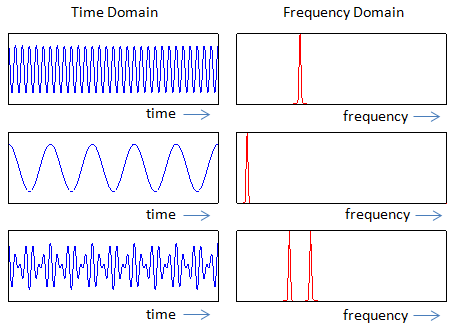

|
RF - Time Domain vs Frequency Domain Home : www.sharetechnote.com |
|
Everybody would know what is meant by "Time" and what it meant by "Frequency" in engineering. Then what does it mean by "Domain". Domain is a concept you might have learned in high school math. You would have learned in "Function" section. When you describe a function in terms of 'set' concept, you normally express it as shown in the left side of the illustration below. When the set A is mapped to the set B by a function. The set A is called a Domain and the set B is called Region. When you express a function in the form of graph, the horizontal axis (independent variable) is called "Domain" and the vertical axis (dependent variable) is called "Region".
With this concept in mind, you can easily guess that "Time Domain" means that "Time" becomes the Domain of a plot (independent variable) and "Frequency Domain" means that "Frequency" becomes the Domain of a plot (independent variable)
We can express a signal either in Time Domain or in Frequency Domain depending on which aspect of the signal you want to focus on. Following is a couple of examples of expressing a signal both in Time Domain and Frequency Domain.

|